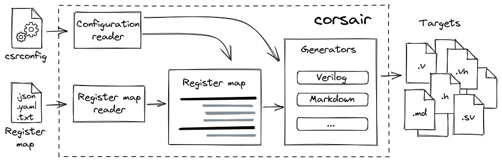

Introduction
Corsair is a tool that makes it easy to create and maintain control and status register (CSR) map for any HDL project. It allows you to describe your register map in a single file and then generate HDL code, headers, documentation and other things. This effectively eliminates any mismatches between hardware, software and documentation of your IP-core.
Features
Various human-readable input formats: JSON, YAML or plain text table
HDL code generation: Verilog or VHDL module with register map, Verilog header or SystemVerilog package with parameters and definitions
Multi-protocol support: APB, AXI-Lite, Avalon-MM
Documentation generation: Markdown, AsciiDoc
Generation of software-related files: C header, Python module
Extensibility: support of external file generators
API: creation of custom workflow with corsair API
Installing
Install the latest stable version from pypi:
python3 -m pip install -U corsair
Using the CLI
Corsair workflow is clean and straight-forward:
describe your register map in one of the supported formats (check this page to get more details)
create configuration file
csrconfig(configuration file is explained here)run
corsairto generate all needed artifacts
Good point for start is to generate templates. For example, to generate YAML register map template just run:
corsair -t yaml
You will have the following catalog structure:
./csrconfig
./regs.yaml
To get all the generation artifacts simply run corsair:
corsair
You can run corsair from other directory. For example, if your configuration file is under project/ip-core/csrconfig:
corsair project/ip-core
If your csrconfig has other name you can try this:
corsair -c my.csrconfig
If your csrconfig has no definition for the register map path you can specify it explicitly:
corsair -r uart.txt
Using the API
You can use corsair classes to build your own workflow inside a Python script. Demonstration of this can be found here.
More information about internal classes can be found in the API section:
Examples
Check the examples directory to see how corsair works.